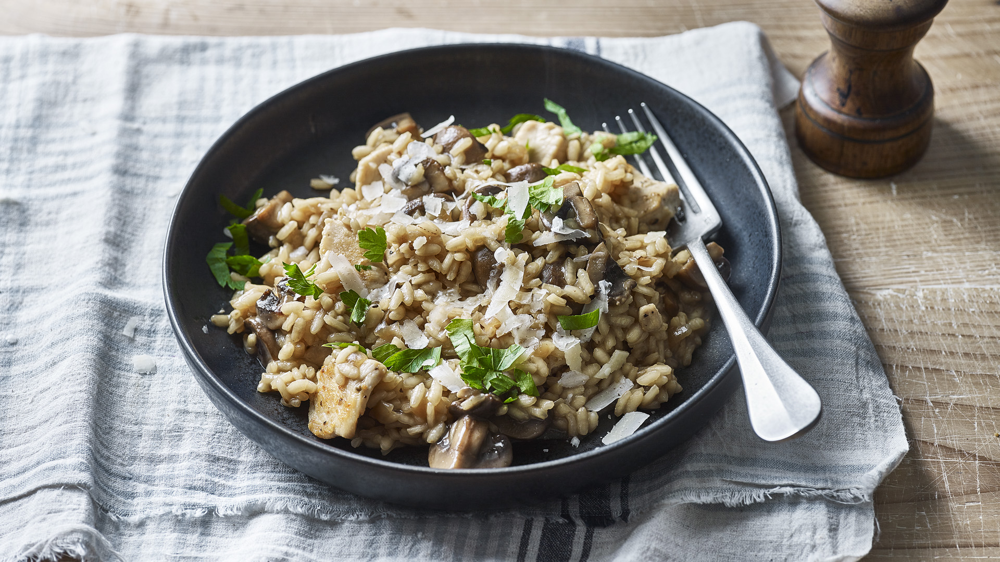

Risotto

Description
A very simple recipe for portobello and white mushroom risotto with plenty of flavor. Dare to try it!
Ingredients
- Chicken broth
- Olive oil
- Mushrooms
- Shallots
- Arborio rice
- White wine
- Butter
- Parmesan cheese
- Chives
Steps
- Gather all ingredients.
- Warm broth in a saucepan over low heat.
- Add portobello and white mushrooms; cook and stir until soft, about 3 minutes.
- Pour in wine and warm broth to the rice, and stir until it's been absorbed.
- Remove from heat. Stir in reserved mushrooms and their liquid, butter, chives, and Parmesan cheese.
- Season with salt and pepper and serve immediately!
Return to main page